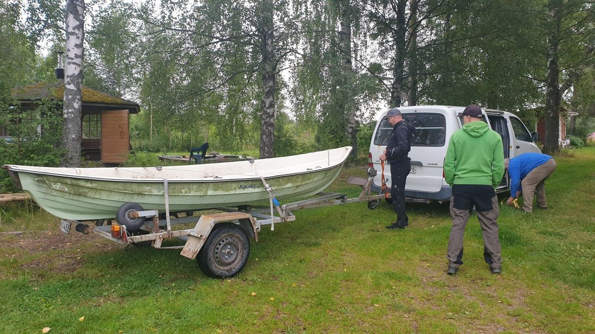
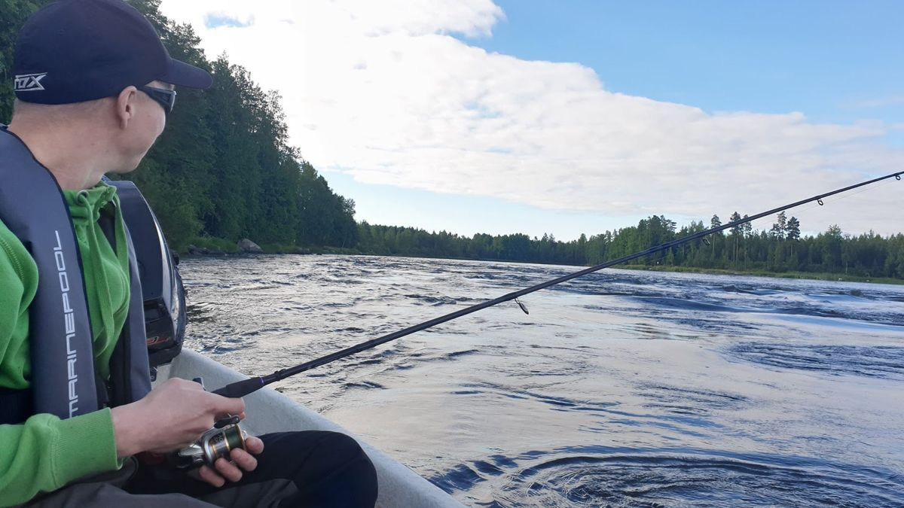
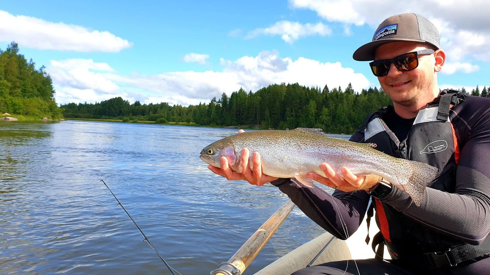
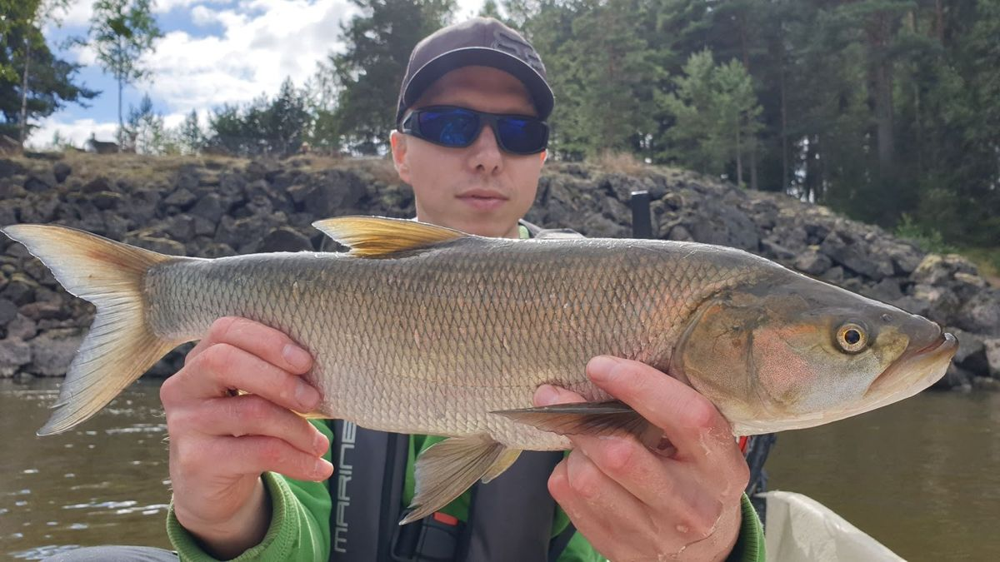
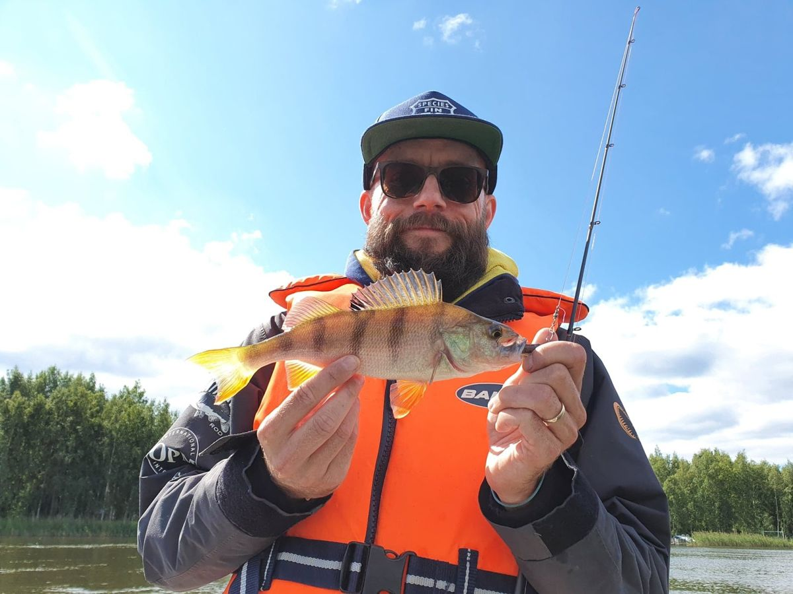
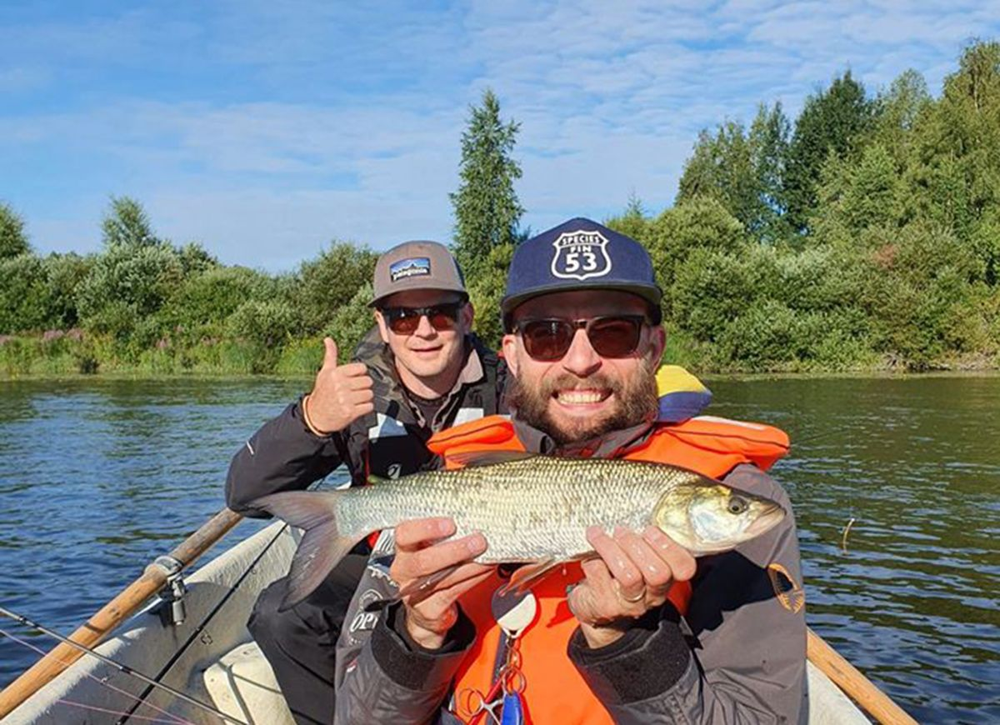

Blogitekstit · Elokuu 2020
Toutainjahdissa Kouvolasta Kotkaan

Kävelen jälleen kerran alakertaan, seinällä oleva Sakke Yrjölän tekemä Suomen kalat -juliste muistuttaa joka kerta pyydettävistä kalalajeista. Julisteen alareunassa toutain ylpeästi esillä yhtenä suurimpana särkilajina.
Kahvit valumaan, aamupalaa nassuun, kello tikittää, kohta se on jo viisi. Kamat kantoon ja kohti autoa hakemaan aurinkolasit, Timi saapui tunnetusti ajallaan.
Elokuinen aamu, pelloilta hiljalleen häviävä usva siivitti minun ja Timin tietä kohti Kymenlaakson mahtivirtaa. Olimme ensimmäistä kertaa lähdössä joelle kalastamaan veneellä, oppaaksemme oli tulossa Olli Mikkonen. Olli on Justuksen kaveri ja tuntee joen kuohut, kivikot ja karikot kuin omat taskunsa.
Olimme siis hyvissä ja osaavissa käsissä.


Tapaamispaikaksi olimme sopineet Hurukselan kylällä sijaitsevaan Aholan lomalaitumen mökkirantaan, yrityksen isäntä Hannu Kahri tulisi paikalle trailerilla ja nostaisimme yhdessä veneen kyytiin. Vene vuokra moottorin kanssa oli 35 €.
Hyppäsin Hannun pakuun ja matkalla Inkeroisten veneenlaskupaikalle juttelimme hänen yrityksestään ja minun ennätysvuodestani. Peti ja aamupala, eli tunnetummin b&b -majoituspalveluita tarjoavalla maatilamatkailu yrityksellä on lisäksi mökki vuokrattavana Kymijoen rannassa.
Laskimme veneen Inkeroisten matonpesupaikan rampilta ja lähdimme kohti alavirtaa. Taustalla Ankkapurhan voimalaitosalue ja tuttu toutainvirta katosi horisonttiin meidän siirtyen alavirtaan päin. Hieman ennen Piirteenkoski Timi pysäytti moottorin ja keulassa soutajana toimiva Olli kertoi kosken ottipaikkoja.


”Tuossa virran reunassa on hyvä monttu, tuossa peili, joka kannattaa kalastaa tarkkaan.”
Kaikesta toiminnasta näki, että kyseessä on koulutettu kalastusopas. Joki oli tuttu ja sen salat olivat oppaamme tiedossa.
Niskalla oli kaksi nuorempaa kalastajaa soutu-uistelemassa, heidän kalakontaktinsa olivat aamulle vain yksi karannut kirjolohi.
Laskeuduimme veneellä heidän alapuolellansa ja parkkeerasimme veneen pieneen akanvirtaan. Ankkuria emme voineet käyttää, koska olimme soutualueella. Alueella on veneestä heittely sallittu, mutta ankkurointi ei.
Vene pysyi hetken paikoilla, ja sen jälkeen valui virran mukana. Seilasimme ylös-alas virtaa kalastaen samoja spotteja uudestaan ja uudestaan. Ensimmäinen kalakontakti tuli, kun taimenlusikka kelpasi pienelle pirteälle hauentumpille.
Kala irti, kuva blogia varten ja takaisin kasvamaan. Heti perään Timin heittämää Wicke -rannikkovaappua käytiin tukistamassa veneen vieressä. Jigillä kalastava Olli sai seuraavan kontaktin, kun kosken kuohuissa kävi joku tarraamassa jigiin jäätämättä kuitenkaan kiinni.
Myös Timi sai heti perään kontaktin, kosken kovimmasta virrasta, joka huudatti liian löysälle jäänyttä kelan jarrua, irti tämäkin. Nyt taisi olla ensimmäinen kunnon toutaintärppi tälle retkelle, mietimme kaikki ääneen.
Vaihdoin itsekin jigiin ja heitin kosken kuohuihin, taisi olla kolmas heittoni, kun vapa niiasi ja kala oli kiinni. Nopeasti kävi ilmi, että nyt on kohdelaji siiman päässä. Pienen, mutta sitäkin äkäisemmän taistelun jälkeen haavissa lepäsi vajaa kilon painoinen turbosärki.
Tuntui epätodelliselta, jälleen voisin piirtää yhden raksin listaan ja todeta, että 55 kalalajia on kasassa. Nyt pystyi keskittymään vain kalastamiseen ja nauttimiseen Kymijoen virrasta.
Matka jatkuisi alavirtaan vielä kymmenisen kilometriä. Matkalla mahtui useita potentiaalisia suurtoutain virtoja ja koskia. Nyt suureni tavoitteet, suuret särkikalat, joilla pääsisimme parantelemaan tilastojamme Suomen vapaa-ajankalastajien ylläpitämää suurkalalistaa.
Taivaalla vastarannan metsikön yläpuolella korkeutta otti joku iso petolintu. Ristimme sen isoksi linnuksi, ylväästi yli joen liitäen kadoten horisontin taakse.
Moottori pärähti käyntiin ja teimme pidemmän siirtymän Tiirankarin niskalle. Päätimme nimetä karin uudestaan töyhtöhyyppäkariksi. Kivirykelmän oli vallannut kymmenen töyhtöhyyppää, jotka tervehtivät meitä rääkyen ja kadon sen jälkeen vastarannan pelloille.
Niskalla saimme muutaman pienen hauen ylös asti ja Timillä kävi joku tukistamassa viehettä.
Laskeuduimme kosken keskivaiheille ja jatkoimme heittelyä.
”Kala, irtos. Ei on se kiinni sittenkin.”
Huusi Olli, veneen vieressä muutaman metrin siiman päässä taisteli itseään irti pirteä kirjolohi. Kala tiesi, että taistelun voitto vaatisi ponnistusta ja päättikin siinä samalla kastella kaikki veneessä olijat pyrstön läiskäytyksillä.


Lopulta kala oli haavissa, kuvaus ja takaisin.
”Kun vedenlämmöt ovat näin korkealla, maistuu kirjolohi ihan P:lle”.
Koski alas, ja nokka kohti pisintä siirtymää. Alhaalla siintäisi Susikoski, jonka rannalla kahvila missä pitäisimme kahvitauon.
Ennen rantautumista kalastimme niskan ja akanvirran. Ei kontakteja, vaikka paikka haisi toutaimelle.
Kahvitauko ei pitkään kestänyt, tuotekorvapuusti upposi kahvin kera nopeasti ja matka jatkui. Vene irtosi laiturista, ja otimme käyttöön luonnon oman ”taivasankkurin”. kosken alainen akanvirta pyöritti meitä nätisti virran reunassa ja voimme jokainen heitellä nätisti virtaan ja akanvirtaan.


Timi vaihtoi jälleen Wicken siiman päähän taisi olla ensimmäinen heitto, kun jarru pärähti. Nyt kala pysyi kiinni ja nopeasti haavissa lepäsi päivän toinen kohdelaji. Ei suurkala, mutta upea kuparikylkinen yksilö.
Ristolanvuolteessa tuli seuraava kalakontakti, kun upea tummaselkäinen taimen kävi moikkaamassa Timin viehettä siihen kuitenkaan nappaamatta.
”Tuosta Justus sai suurkala toutaimen.”
Kertoi Olli, vaikka heittelemme jigiä, lusikkaa ja vaappua koskeen ei toutaimia näy. Ehkä sitten seuraavalla kerralla.


Lopulta vain oppaamme Olli jäi ilman toutainta. Lajilistalle nousi tavoitelajin lisäksi haukia, kirjolohi ja yksi ahven.
Kymijoessa on mieletön potentiaali kalastusmatkailulle, tälle reilun kymmenen kilometrin matkalle jäi lukuisia suvanto-osuuksia joiden syvyyksissä suuret hauet vain odottavat haukishädien eteen tipahtamista, syvät kalliopohjaiset montut joiden pohjalla lepäävät jättikuhat.
Joen hyödyntämätön potentiaali, niin lähellä mutta niin kaukana.


Kiitos Olli hienosta retkestä. Tuntui kuin olisimme tunteneet jo entuudestaan, meillä huumorin taso kohtasi ja kuten hienosti sanoit.
”V*ittuilu on välittämistä.”
Seuraa ennätyksen etenemistä
Pidän kirjaa lajilistasta ja tarkemmasta retkidatasta Google -taulukossa, joka löytyy jokaisesta ennätysyrityksen postauksesta.
Tästä linkistä taulukko avautuu uuteen ikkunaan.
Seurantatilanne löytyy myös blogini oikeasta yläreunasta.
Vuoden aikana ennätysyrityksessä kulkee mukaan myös tämä kalataitelija-graaffikko Sakke Yrjölän suunnittelema SPECIES FIN 53 -merkki.
Paitakulmassa painatin pipoon ja lippikseen saman merkin. Tavoitteeni on saada aikaiseksi 53 saaliskuvaa tekstin alussa tekemääni taulukkoon joissa kaikissa kuvissa näkyisi tuo kyseinen tunnus.
Paitakulma on Suomalainen perheyritys, joka haluaa panostaa laatuun ja asiakastyytyväisyyteen. Tutustu yrityksen palveluihin tästä.